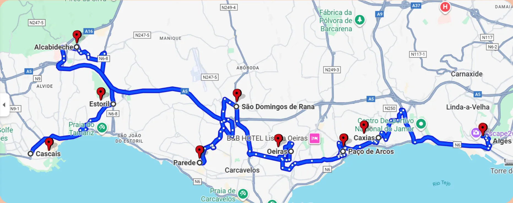

Transporte ao Domicílio
O transporte ao domicílio consiste na recolha e/ou entrega do teu cão diretamente na tua morada, proporcionando máxima comodidade e segurança. Disponível mediante marcação prévia e sujeito a disponibilidade de rota.
para mais informações sobre custos e pedidos especiais, contacta-nos.
Transporte entre Lisboa e Sintra
Pontos de entrega e recolha:
- Olivais | Segunda a Quinta: 7h30 | 18h30
- Benfica | Segunda a Quinta: 7h45 | 18h30
- Telheiras | Segunda a Quinta: 8h00 | 18h00-18h15
Transporte entre Linha de Cascais e Sintra
Pontos de entrega e recolha ao longo da linha. Consulte o mapa para visualizar o percurso e os principais pontos atendidos.

Dias e Horários da linha de Cascais sob consulta:
+351 917 684 724
Instruções Importantes
- Os pontos são públicos e definidos para segurança e praticidade.
- Utilização apenas com marcação prévia.
- Chegue 5 minutos antes do horário combinado.
- Informe-nos com antecedência sobre necessidades especiais.
- Em caso de possível atraso, avise-nos o mais cedo possível.
- O tutor é responsável por garantir que o cão está apto para transporte.